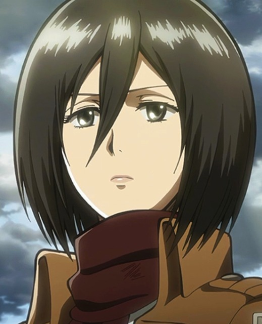
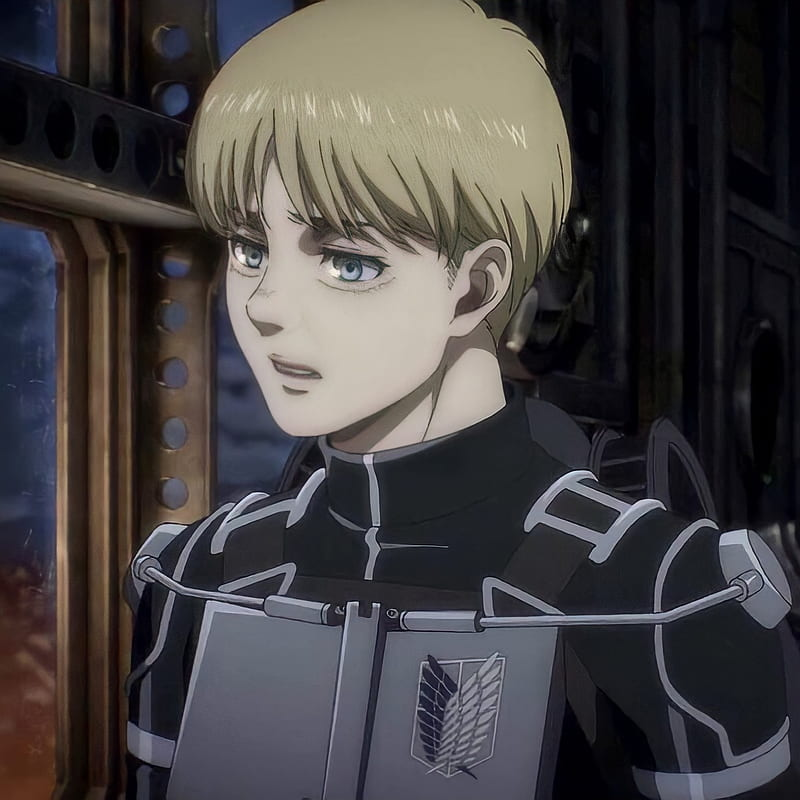
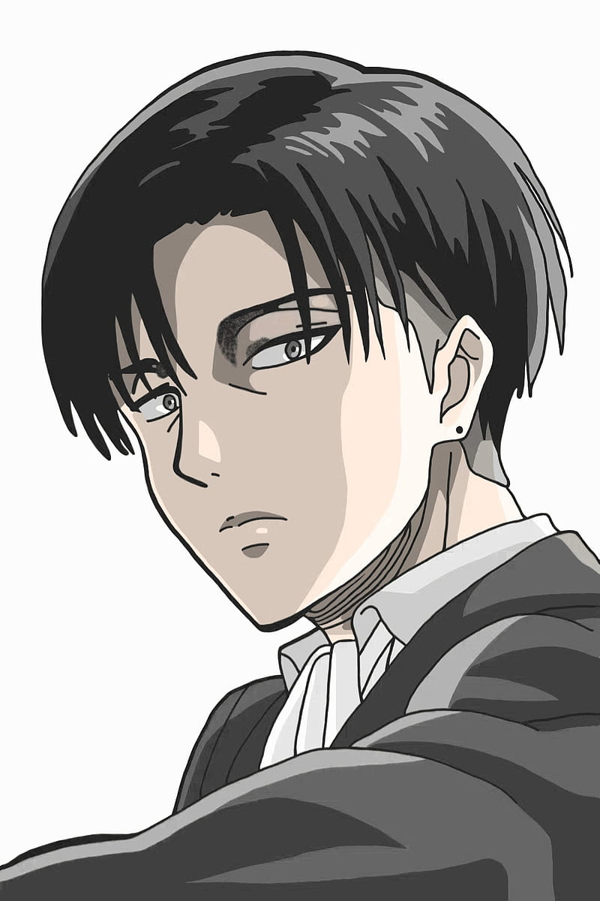
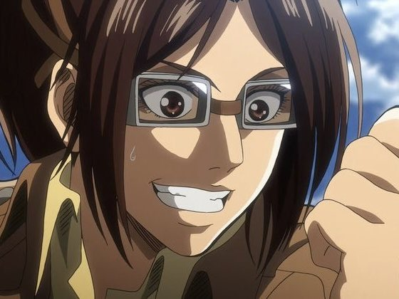
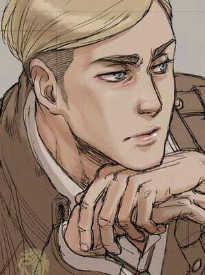
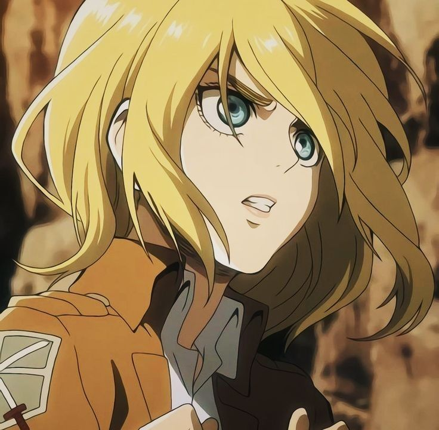
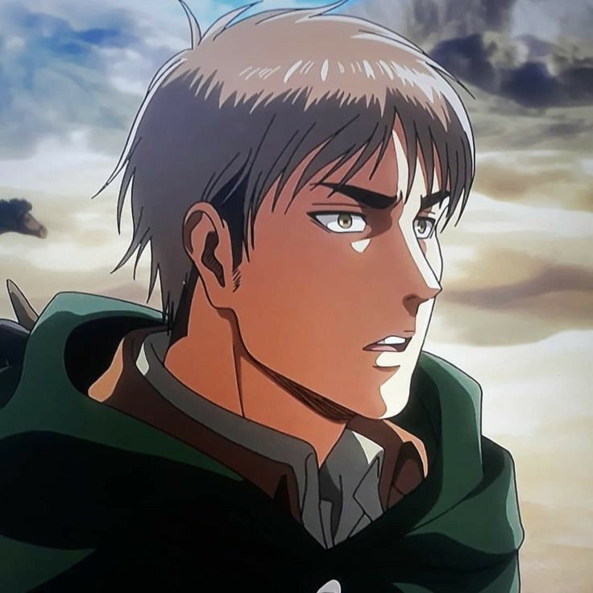
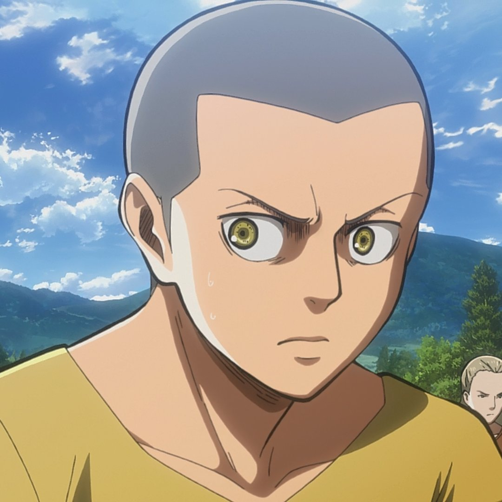
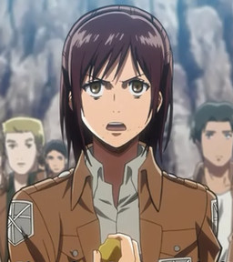

القصة الكاملة لهجوم العمالقة
تدور أحداث القصة في عالم يعيش فيه البشر داخل مدن محاطة بأسوار ضخمة لحمايتهم من العمالقة، مخلوقات ضخمة تأكل البشر دون سبب واضح. إيرين ييغر، ميكاسا أكرمان، وأرمن أرليرت أصدقاء يعيشون في مدينة شيجانشينا عندما يهاجم العمالقة مدينتهم ويقتلون والدتي إيرين.
ينضم الأصدقاء الثلاثة إلى فيلق الاستطلاع للانتقام من العمالقة واكتشاف أسرارهم. أثناء رحلتهم، يكتشفون حقائق صادمة عن عالمهم وأصل العمالقة، مما يقلب كل ما عرفوه رأساً على عقب.
المواضيع الرئيسية
تتناول القصة مواضيع عميقة مثل:
- الحرية ومقاومة القمع
- الحرب وعواقبها
- الانتقام والعدالة
- العلاقات الإنسانية في أوقات الأزمات
- الأسرار التاريخية والتلاعب بالذاكرة الجماعية
الشخصيات الرئيسية
تعرف على أبرز شخصيات أنمي هجوم العمالقة
إيرين ييغر
البطل الرئيسي
القدرة: عملاق الهجوم/المؤسس
الانتماء: فيلق الاستطلاع
السمات: عنيد، عاطفي، عازم على الانتقام
بطل القصة الرئيسي الذي يقسم على القضاء على جميع العمالقة بعد أن شاهدهم يقتلون أمه. يمتلك قدرة التحول إلى عملاق.

ميكاسا أكرمان
أقوى جندية
القدرة: مهارات قتالية فائقة
الانتماء: فيلق الاستطلاع
السمات: قوية، مخلصة، تحمي إيرين بأي ثمن
فتاة تمتلك قوة بدنية وذهنية استثنائية. تربطها بإيرين علاقة قوية منذ الطفولة وتحميه بكل ما أوتيت من قوة.

أرمن أرليرت
الاستراتيجي العبقري
القدرة: ذكاء تكتيكي
الانتماء: فيلق الاستطلاع
السمات: ذكي، ضعيف جسدياً، عاطفي
صديق الطفولة لإيرين وميكاسا. رغم ضعفه الجسدي، يمتلك ذكاءً استراتيجياً يجعل منه أحد أهم أعضاء الفريق.

ليفاي أكرمان
أقوى جندي
القدرة: مهارات قتالية أسطورية
الانتماء: فيلق الاستطلاع
السمات: هادئ، صارم، أنيق
قائد فرقة في فيلق الاستطلاع وأقوى جندي لدى البشرية. مشهور بمهاراته القتالية الفائقة واهتمامه المفرط بالنظافة.

هانجي زوي
قائدة فيلق الاستطلاع
القدرة: خبيرة في العمالقة
الانتماء: فيلق الاستطلاع
السمات: عبقري، فضولي، غريب الأطوار
عالمة مجنونة مهووسة بدراسة العمالقة. تقدم مساهمات كبيرة في فهم طبيعة العمالقة وتطوير استراتيجيات لمحاربتهم.

إيروين سميث
القائد السابق
القدرة: قيادة استثنائية
الانتماء: فيلق الاستطلاع
السمات: كاريزمي، استراتيجي، جريء
القائد السابق لفيلق الاستطلاع. يتمتع ببصيرة استثنائية وقدرة على اتخاذ القرارات الصعبة التي تخدم الصالح العام.

هيستوريا ريس
الملكة
القدرة: ملكة الجدران
الانتماء: الجيش
السمات: لطيفة، قوية الإرادة، مثالية
ملكة شعب الجدران وابنة رود ريس. تتحول من شخصية خجولة إلى قائدة قوية تسعى لتحقيق العدالة.

جان كيرشتاين
قائد فرقة
القدرة: قيادة الفرق
الانتماء: فيلق الاستطلاع
السمات: عملي، واقعي، قائد بالفطرة
جندي يتمتع بمهارات قيادية فطرية. يتطور من شخص أناني إلى قائد مسؤول يهتم بسلامة فريقه.

كوني سبرينغر
عضو فيلق الاستطلاع
القدرة: حركة ثلاثية الأبعاد
الانتماء: فيلق الاستطلاع
السمات: مضحك، مخلص، يحمل هم عائلته
جندي في فيلق الاستطلاع يتمتع بروح الدعابة. يحمل هماً كبيراً بسبب اختفاء عائلته ويبحث عن الحقيقة.

ساسها براوس
عضو فيلق الاستطلاع
القدرة: دقة الرماية
الانتماء: فيلق الاستطلاع
السمات: شرهة، مضحكة، ماهرة في الصيد
فتاة من الريف تتمتع بمهارات صيد ممتازة. تعرف بحبها للطعام وروحها المرحة التي تخفف من حدة التوتر في الفريق.
أركات القصة
المراحل الرئيسية لتطور القصة في أنمي هجوم العمالقة
أركة سقوط شيجانشينا
الموسم 1 (الحلقات 1-25)
بداية القصة مع هجوم العمالقة على مدينة شيجانشينا، مقتل والدة إيرين، وانضمام الأصدقاء الثلاثة إلى الجيش. اكتشاف قدرة إيرين على التحول إلى عملاق.
أركة الاستطلاع خارج الأسوار
الموسم 2 (الحلقات 1-12)
اكتشاف وجود عملاقين ذكيين داخل الأسوار، ومعركة حامية ضد عملاق الأنثى وعملاق الدبابة. كشف هوية بعض العمالقة الذكيين.
أركة حكومة الجدران
الموسم 3 الجزء 1 (الحلقات 1-12)
الصراع مع الحكومة المركزية وكشف المؤامرات داخل الجدران. اكتشاف أسرار عائلة ريس والقوة التأسيسية.
أركة معركة استعادة شيجانشينا
الموسم 3 الجزء 2 (الحلقات 13-22)
عملية استعادة المدينة المسورة من العمالقة. معارك شرسة وتضحيات كبيرة من أجل الحصول على المعلومات في القبو.
أركة الحرب ضد مارلي
الموسم 4 (الحلقات 1-16)
اكتشاف العالم خارج الجدران والحقيقة المرة عن مارلي والأرضيين. تحول إيرين إلى شخصية أكثر قسوة وتخطيطه للهجوم على العالم.
طريقة مشاهدة الأنمي
روابط مباشرة لمشاهدة أنمي هجوم العمالقة على المنصات المختلفة
ترتيب المشاهدة الموصى به:
- الموسم الأول (25 حلقة)
- الموسم الثاني (12 حلقة)
- الموسم الثالث الجزء الأول (12 حلقة)
- الموسم الثالث الجزء الثاني (10 حلقات)
- الموسم الرابع الجزء الأول (16 حلقة)
- الموسم الرابع الجزء الثاني (12 حلقة)
- الموسم الرابع الجزء الثالث (حلقات نهائية)